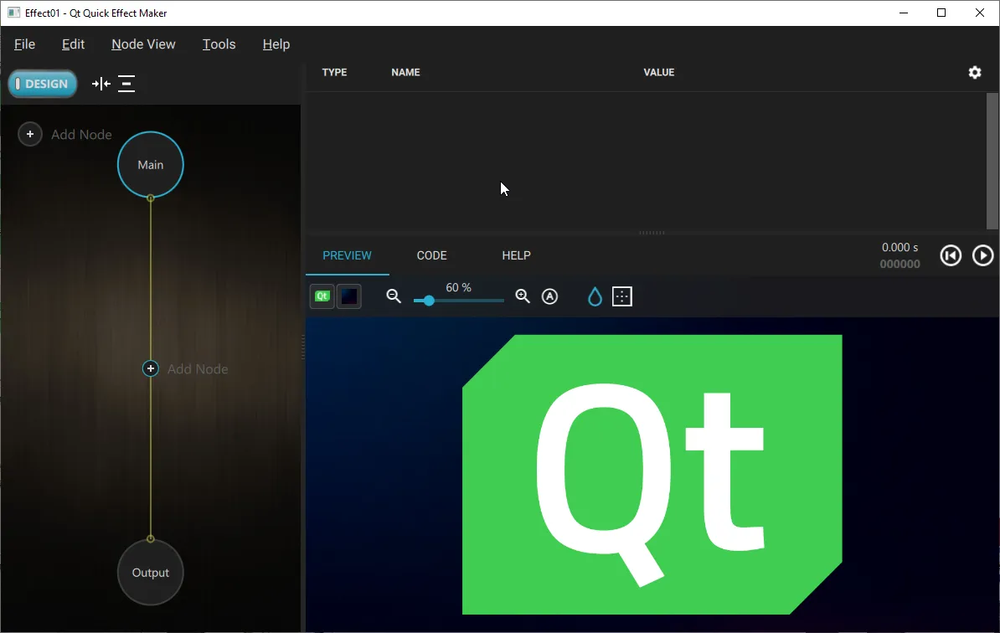

Qt Quick Effect Maker
Qt Quick Effect Maker is a tool for creating shader effects for Qt Quick with high productivity and performance. You can run Qt Quick Effect Maker as a standalone tool but it is also included in Qt Design Studio.

Feature overview
The main features of Qt Quick Effect Maker:
- Live preview: When you work with effects, you can see most changes instantly in the live preview.
- Node view: In the node view, you build effects without coding. There are over 30 nodes, including most of the Qt Graphical Effects.
- Code view: In the code view, you can edit the code of all effect node shaders. The code editor features include GLSL syntax highlighting, auto indent, search, and more.
- Combined effects: For increased performance, Qt Quick Effect Maker combines all the effects in one shader.
- JSON file format: Qt Quick Effect Maker stores project and node files in JSON format, making it easy to share files for increased productivity.
- Shadertoy compatibility: Variable naming in Qt Quick Effect Maker is in most cases compatible with Shadertoy, making it easy to port Shadertoy shaders to Qt Quick Effect Maker and the other way around. Most Shadertoy features and some extra features, such as vertex shaders, custom textures, and properties, are supported.
- Pure Qt Quick: Qt Quick Effect Maker is implemented with Qt Quick and Qt Quick Controls. The work flow is designed for Qt Quick and Qt RHI.
Getting started
How-to's
Examples
- Wiggly: Demonstrates how to use an effect created with Qt Quick Effect Maker.